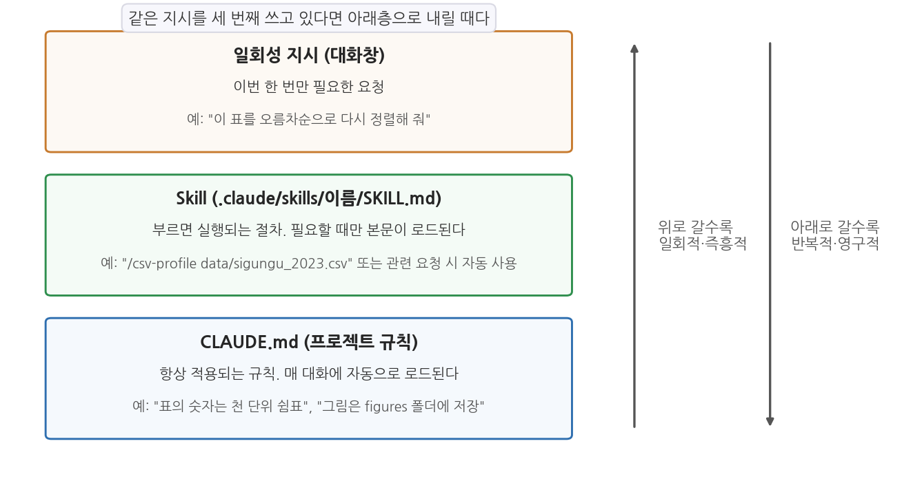
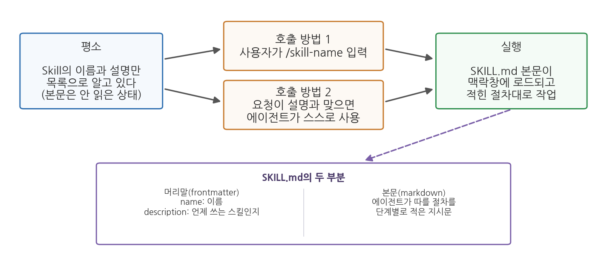

5주차 1회차. 반복 작업의 표준화: Skill
문명은 우리가 생각하지 않고도 수행할 수 있는 중요한 작업의 수를 늘림으로써 발전한다. (앨프리드 노스 화이트헤드, 『수학 입문』)
이 장에서 배우는 것
4주차까지 우리는 작업대를 차렸다. VSCode 안에 Claude Code가 들어왔고, uv로 파이썬 환경을 갖췄고, CSV 하나를 읽어 요약통계까지 뽑아 보았다. 다음 주부터는 이 작업대 위로 진짜 데이터가 쏟아진다. 그 전에 이번 주에 준비할 것이 하나 있다. 반복되는 작업을 처리하는 방식이다.
구청 인턴이 된 여러분을 상상해 보자. 매주 새로운 데이터 파일이 온다. 인구 파일, 민원 집계, 예산 자료. 파일을 받을 때마다 여러분은 에이전트에게 거의 같은 지시를 입력한다. "행과 열 수를 확인하고, 각 열의 자료형과 결측 개수를 표로 만들고, 수치형 열은 요약통계를 내 줘..." 첫 주에는 정성껏 쓴다. 둘째 주에는 지난번 지시를 찾아 복사한다. 셋째 주에는 급한 마음에 기억나는 대로 다시 친다. 그리고 그 주의 보고서만 결측 항목이 빠져 있다. 문제는 여러분의 성실성이 아니다. 사람 손으로 반복하는 지시는 원래 조금씩 표류한다.
이 장에서 배우는 Skill은 이 문제의 해법이다. 반복 절차를 파일 하나에 적어 저장해 두고, 명령 한 줄로 불러 쓰는 장치다. 그리고 자동화가 이렇게 쉬워질수록 더 중요해지는 질문, 곧 무엇을 맡기고 무엇을 사람이 쥐고 있어야 하는지도 함께 다룬다.
이 장은 구체적으로 다음을 배운다.
- 반복 지시의 세 가지 비용과, 절차를 저장한다는 발상
- 규칙의 그릇인 CLAUDE.md와 절차의 그릇인 Skill의 구분 (3주차와 연결)
- SKILL.md 파일의 구조: 머리말(frontmatter)과 본문
- 스킬을 부르는 두 가지 방법: 슬래시 커맨드와 자동 호출
- 자동화의 경계, 곧 맡길 일과 남길 일을 가르는 기준
이 장은 하나의 질문을 따라 전개된다. "반복되는 작업을 어떻게 저장하고, 어디까지 맡길 것인가?"
1.1 반복 지시의 비용을 확인한다 → 1.2 CLAUDE.md(규칙)와 Skill(절차)을 구분한다 → 1.3 SKILL.md 파일을 해부한다 → 1.4 슬래시 커맨드와 자동 호출을 배운다 → 1.5 자동화의 경계를 긋는다.
1.1 같은 지시를 세 번째 치고 있다면: 반복의 비용
복사-붙여넣기의 세 가지 비용
3주차 실습에서 우리는 나만의 지시문 라이브러리를 시작했다. 잘 다듬은 지시문을 메모 파일에 모아 두고, 필요할 때 복사해 붙여 쓰는 방식이었다. 좋은 출발이지만, 학기가 진행될수록 이 방식의 한계가 드러난다. 비용은 세 가지다.
첫째, 번거로움이다. 메모 파일을 열고, 해당 지시문을 찾고, 복사하고, 대화창에 붙이고, 파일 이름 같은 세부를 고치는 데 매번 1-2분이 든다. 잦은 작업일수록 이 마찰이 쌓인다.
둘째, 표류다. 도입부 인턴의 셋째 주가 바로 이 경우다. 복사 대신 기억으로 다시 치는 순간 문구가 조금씩 달라지고, 지시가 달라지면 산출물의 형식도 달라진다. 지난주 보고서에는 있던 결측 표가 이번 주 보고서에는 없는 식이다. 산출물 형식이 들쭉날쭉하면 비교와 검증이 어려워진다.
셋째, 나만 안다는 것이다. 라이브러리는 내 메모 파일 속에 있다. 에이전트는 그런 파일이 있는 줄 모르므로, 내가 복사해 주지 않으면 쓰지 못한다. 팀 동료도 마찬가지다.
이 세 비용을 한 번에 줄이는 방향은 분명하다. 지시문을 사람의 메모가 아니라 에이전트가 아는 자리에, 정해진 형식으로 저장하는 것이다. 그 자리가 이 장의 주인공인 Skill이다.
행정의 오래된 지혜: 매뉴얼
이 발상은 사실 새롭지 않다. 행정 조직은 오래전부터 같은 문제를 업무 매뉴얼로 풀어 왔다. 민원 접수 절차, 보도자료 작성 요령, 재난 대응 지침이 문서로 표준화되어 있으면, 담당자가 바뀌어도 일의 품질이 유지되고 신입도 빨리 배운다. 개인의 노하우를 조직의 절차로 바꾸는 것이 표준화다. Skill은 에이전트와 일하는 나에게 만드는 업무 매뉴얼이라 생각하면 정확하다.
1.2 규칙의 그릇, 절차의 그릇: CLAUDE.md와 Skill
CLAUDE.md에 다 적으면 안 되는가
3주차에서 배운 CLAUDE.md가 떠오를 수 있다. 반복 규칙을 영구 고정하는 파일이었다. 그런데 CLAUDE.md에 긴 절차를 다 적어 넣으면 곤란한 점이 있다. CLAUDE.md는 매 대화에 통째로 로드되는 "항상 켜져 있는" 규칙이다. 데이터 진단 절차는 새 CSV를 받은 날에만 필요한데, 그 긴 절차문이 문서를 요약하는 날에도, 환경을 점검하는 날에도 맥락창 한 자리를 차지하고 앉아 있게 된다. 2주차에서 배웠듯 맥락창은 한정된 작업 기억이다. 항상 필요하지 않은 내용으로 책상을 채우는 것은 낭비다.
정리하면, 규칙(항상 적용되는 사실과 선호)과 절차(특정 상황에서 실행하는 일련의 단계)는 성격이 다르고, 다른 그릇이 필요하다. 그 그릇이 Skill이다. Claude Code에서 Skill은 절차를 적은 SKILL.md 파일을 담은 폴더이며, 필요할 때만 불려 나와 실행된다.
Skill(스킬)은 에이전트에게 특정 작업의 절차를 가르쳐 두는 확장 장치다. 폴더 하나에 SKILL.md라는 지시문 파일을 넣어 만들며, 프로젝트 폴더의
.claude/skills/스킬이름/SKILL.md에 두면 그 프로젝트에서, 사용자 홈 폴더 아래의 .claude/skills/스킬이름/SKILL.md에 두면 모든 프로젝트에서 쓸 수 있다. 에이전트가 관련 요청을 받으면 스스로 불러 쓰기도 하고, 사용자가 슬래시 커맨드(1.4절)로 직접 부를 수도 있다.

그림 5-1이 세 그릇의 관계를 보여 준다. 맨 위의 일회성 지시는 이번 한 번만 필요한 요청으로, 대화창에 치고 흘려보낸다. 맨 아래의 CLAUDE.md는 항상 적용되는 규칙으로, 매 대화에 자동 로드된다. Skill은 그 사이에 있다. 반복해서 쓰지만 항상 필요하지는 않은 절차를 담아 두고, 부를 때만 로드한다. 그림 위의 문장이 실용적 판단 기준이다. 같은 지시를 세 번째 쓰고 있다면 아래층으로 내릴 때다. 공식 문서도 같은 기준을 권한다. 같은 지시문을 자꾸 붙여 넣고 있거나, CLAUDE.md의 한 절이 규칙이 아니라 절차로 자라났다면 Skill로 옮기라는 것이다.
작동 방식에도 결정적 차이가 있다. 에이전트는 평소에 각 스킬의 이름과 설명만 목록으로 알고 있고, 본문은 그 스킬이 실제로 불릴 때에만 맥락창에 로드한다. 그래서 긴 절차와 참고자료를 스킬에 담아 두어도 쓰지 않는 동안에는 맥락창을 거의 차지하지 않는다. 규칙은 항상 켜 두고(CLAUDE.md), 절차는 서랍에 넣어 두었다가 꺼내 쓰는(Skill) 구조인 셈이다.
1.3 SKILL.md 해부: 머리말과 본문
신비한 설정 파일이 아니라 지시문이다
SKILL.md는 평범한 텍스트 파일이고, 두 부분으로 이루어진다. 파일 맨 위에 --- 두 줄 사이로 끼워 넣는 머리말(frontmatter)과, 그 아래의 본문이다. 다음 회차 실습에서 직접 만들 스킬의 뼈대를 미리 보자.
---
name: csv-profile
description: CSV 파일의 프로파일링 보고서를 표준 형식으로 만든다.
새 데이터 파일을 받았을 때, 데이터 개요·프로파일링·진단을 요청받았을 때 사용.
---
CSV 파일을 받아 표준 프로파일링 보고서를 작성한다.
1. 파일을 읽어 행 수, 열 수, 열 이름과 자료형을 확인한다.
2. 열별 결측 개수와 비율을 표로 만든다.
3. ... (이하 절차)
- 머리말에는 스킬의 이름(
name)과 설명(description)을 적는다. 두 필드 모두 형식상 생략할 수 있지만(이름은 폴더 이름이 대신한다),description은 꼭 쓰는 것이 좋다. 에이전트가 "지금 이 요청에 이 스킬을 쓸까"를 판단하는 근거가 바로 이 설명이기 때문이다. 무엇을 하는 스킬인지와 언제 쓰는지를 함께 적는다. - 본문에는 에이전트가 따를 절차를 적는다. 형식은 자유로운 마크다운이지만, 잘 만든 스킬의 본문은 3주차에서 배운 좋은 지시문과 똑같이 생겼다. 단계가 순서대로 나뉘어 있고, 산출물의 형식이 명시되어 있고, 성공 기준이 들어 있다. 스킬은 결국 "잘 다듬은 지시문의 저장고"다.
본문이 길어질 때의 요령도 있다. 공식 문서는 본문을 500줄 아래로 유지하고, 더 긴 참고자료(양식, 예시 표, 기준표, 스크립트)는 같은 폴더에 별도 파일로 두어 SKILL.md에서 연결하라고 권한다. 에이전트는 절차를 따르다 그 파일이 필요해지는 시점에 읽는다.
무엇을 스킬로 만들 만한가
기준은 간단하다. 절차가 여러 단계이고, 산출물 형식이 정해져 있고, 주기적으로 반복되면 스킬 후보다. 도입부 인턴의 데이터 진단이 정확히 그렇다. 실무 예를 하나 더 들면, 매달 민원 집계 파일을 받아 유형별로 분류하고 표준 집계표를 만드는 일이 있다고 하자. 분류 기준표를 스킬 폴더에 함께 넣어 두면, "이번 달 민원 집계해 줘" 한마디로 지난달과 같은 기준·같은 형식의 결과를 받을 수 있다.
반면 스킬로 만들 필요가 없는 것도 있다. 한 번만 할 일(일회성 지시로 충분), 절차라기보다 취향인 것("표는 천 단위 쉼표", CLAUDE.md에 한 줄이면 된다), 그리고 매번 판단이 크게 달라지는 일(표준화 자체가 무리)이다.
1.4 부르는 법: 슬래시 커맨드와 자동 호출
빗금 하나로 절차를 부른다
스킬을 부르는 방법은 두 가지다. 하나는 사용자가 직접 부르는 것이다. 대화창에 빗금(/)과 스킬 이름을 입력하면 된다. .claude/skills/csv-profile/ 폴더에 만든 스킬은 /csv-profile이라는 명령이 된다. 이런 명령을 슬래시 커맨드(slash command)라 부른다. 다른 하나는 에이전트에게 맡기는 것이다. 요청이 스킬의 description과 맞아떨어지면 에이전트가 알아서 그 스킬을 꺼내 쓴다.
슬래시 커맨드(slash command)는 대화창에서
/이름 형태로 입력해 기능을 직접 실행하는 명령이다. Claude Code에는 /help 같은 내장 명령이 있고, 사용자가 만든 스킬도 폴더 이름 그대로 슬래시 커맨드가 된다. 즉 스킬을 하나 만들면 "에이전트가 알아서 쓰는 절차"와 "내가 직접 부르는 명령"이 동시에 생기는 셈이다. 과거 Claude Code에는 커스텀 커맨드라는 별도 체계(.claude/commands/ 폴더)가 있었는데, 현재는 스킬 체계로 통합되어 같은 방식으로 작동한다.

그림 5-2가 전체 흐름이다. 평소 에이전트는 스킬들의 이름과 설명만 목록으로 갖고 있다(왼쪽). 사용자가 /스킬이름을 입력하거나(호출 방법 1), 요청이 설명과 맞아 에이전트가 스스로 선택하면(호출 방법 2), 그제서야 SKILL.md 본문이 맥락창에 로드되고 적힌 절차대로 작업이 시작된다(오른쪽). 아래 상자는 그 SKILL.md가 머리말과 본문으로 이루어져 있음을 다시 보여 준다.
슬래시 커맨드에는 인자를 붙일 수 있다. /csv-profile data/sigungu_2023.csv처럼 명령 뒤에 덧붙인 내용은 스킬 본문에 적어 둔 $ARGUMENTS라는 자리표시자에 끼워져 전달된다. 본문에 "다음 파일을 프로파일링하라: $ARGUMENTS"라고 적어 두면, 위 명령은 "다음 파일을 프로파일링하라: data/sigungu_2023.csv"라는 지시가 되어 실행된다. 하나의 스킬을 여러 파일에 재사용할 수 있게 하는 장치다.
부르는 주체를 제한할 수도 있다
기본값으로는 사용자와 에이전트 모두 스킬을 부를 수 있다. 그런데 어떤 절차는 에이전트가 알아서 실행하면 곤란하다. 예를 들어 "보고서를 제출 폴더로 복사하고 이전 버전을 지우는" 절차라면, 타이밍은 사람이 정해야 한다. 이럴 때 머리말에 disable-model-invocation: true 한 줄을 추가하면 에이전트의 자동 사용이 막히고 사용자의 슬래시 커맨드로만 실행된다. 반대 방향의 설정(user-invocable: false, 에이전트만 쓰는 배경지식용)도 있다. 자동화 장치를 만들면서 동시에 그 장치의 방아쇠를 누가 당길지 정하는 것, 이것이 다음 절의 주제인 "경계 설정"의 축소판이다.
3주차 실습에서 시작한 지시문 라이브러리는 잘 된 지시문을 메모 파일에 모아 두고 복사해 쓰는 방식이었다. Skill은 그 라이브러리의 진화형이다. 차이는 세 가지다. 첫째, 복사-붙여넣기가 사라진다. 명령 한 줄이면 된다. 둘째, 에이전트도 라이브러리를 읽는다. 설명이 맞으면 시키지 않아도 꺼내 쓴다. 셋째, 공유가 된다. 프로젝트 폴더의
.claude/skills/를 팀원에게 통째로 주면 팀 전체가 같은 절차로 일한다. 행정 조직으로 치면 개인 노하우가 업무 매뉴얼로 표준화되는 과정과 같다.
1.5 자동화의 경계: 무엇을 맡기고 무엇을 남길 것인가
자동화가 쉬워질수록 판단은 무거워진다
스킬로 절차를 표준화하면 에이전트에게 맡길 수 있는 일의 범위가 눈에 띄게 넓어진다. 매주 반복하던 데이터 진단이 명령 한 줄이 되고, 월별 집계 보고서가 파일 하나로 준비된다. 바로 그래서 이 시점에 멈춰 물어야 한다. 맡길 수 있다고 해서 다 맡겨도 되는가.
1주차의 위임(delegation) 개념과 자율성 조절의 비유를 떠올리자. 자동화의 경계를 정하는 것은 결국 "이 작업에서 자율주행 몇 단계를 허용할 것인가"의 문제다. 판단을 돕는 네 가지 질문을 표로 정리했다.
표 5-1. 자동화 적합성을 가르는 네 가지 질문
| 질문 | 맡기기 좋은 쪽 | 사람이 남아야 하는 쪽 |
|---|---|---|
| 반복되는가 | 매달 같은 형식의 진단 보고서 | 한 번뿐인 특수 분석 |
| 성공 기준이 명확한가 | "결측 개수 표가 원본과 일치" 등 검증 가능 | "보고서가 설득력 있는가" 등 판단 의존 |
| 틀렸을 때 피해가 작은가 | 내부 검토용 중간 산출물 | 외부 공표 자료, 정책 결정 근거 |
| 규칙으로 적을 수 있는가 | 절차를 단계로 쓸 수 있는 작업 | 맥락마다 기준이 달라지는 작업 |
네 질문 모두 "맡기기 좋은 쪽"이면 스킬로 만들어 크게 맡긴다. 하나라도 오른쪽이면, 자동화하더라도 사람의 확인 지점을 절차 안에 심는다. 예컨대 민원 집계를 스킬화할 때, 분류 자체는 맡기되 "확신이 낮은 건은 별도 목록으로 뽑아 사람 검토를 요청하라"는 단계를 본문에 넣는 식이다. 스킬은 사람을 배제하는 도구가 아니라, 사람의 확인이 필요한 지점을 절차 안에 명시하는 도구로 쓸 때 가장 안전하다.
끝까지 사람에게 남는 세 가지
작업을 아무리 잘게 자동화해도 넘길 수 없는 것이 남는다. 이 과목의 언어로 정리하면 세 가지다.
첫째, 기준의 설정이다. 민원 분류 스킬의 분류 기준표를 무엇으로 할지, 진단 보고서에서 "결측이 많다"의 문턱을 몇 %로 할지는 스킬이 정하지 않는다. 사람이 정해서 스킬에 적어 넣는 것이다. 스킬은 기준을 실행할 뿐, 기준을 세우지 못한다.
둘째, 예외의 판단이다. 표준 절차는 표준적인 입력을 전제한다. 형식이 다른 파일, 분류표에 없는 새 유형의 민원 앞에서 표준 절차는 조용히 틀린다. 예외를 알아채는 것은 결과를 읽는 사람의 몫이고, 알아챈 예외를 반영해 스킬을 고치는 것(다음 회차 실습의 "테스트와 개선")도 사람의 몫이다.
셋째, 결과에 대한 책임이다. 스킬이 만든 보고서에 서명하는 사람은 스킬이 아니다. 14주차에서 다루겠지만, AI가 만든 산출물을 검증 없이 내보낸 결과는 내보낸 사람이 진다. 자동화는 작업 시간을 줄여 주는 것이지, 검증 의무를 줄여 주는 것이 아니다. 오히려 산출물이 늘어나는 만큼 검증할 것도 늘어난다.
같은 형식의 보고서가 매번 말끔하게 나오기 시작하면, 사람은 점점 들여다보지 않게 된다. 자동 시스템의 산출물을 과신하는 이 경향을 자동화 편향(automation bias)이라 부른다. 스킬이 안정적으로 돌아간 지 오래일수록, 입력 데이터가 바뀌었을 때(새 연도, 새 형식, 새 유형) 틀린 결과가 걸러지지 않고 통과할 위험이 커진다. 대응은 단순하다. 스킬 산출물에도 2주차 이래의 원칙을 그대로 적용하는 것이다. 표본을 뽑아 원본과 대조한다. 검증 체크리스트를 스킬 본문 안에 넣어 두는 것도 좋은 방법이다.
요약
반복 지시를 복사해 쓰는 방식에는 번거로움, 문구의 표류, 나만 안다는 세 가지 비용이 있으며, 해법은 지시문을 에이전트가 아는 자리에 정해진 형식으로 저장하는 표준화다. Claude Code에서 그 그릇이 Skill이다. 항상 적용되는 규칙은 CLAUDE.md에, 특정 상황에서 실행하는 절차는 Skill에 담는다. CLAUDE.md는 매 대화에 통째로 로드되지만 스킬은 평소 이름과 설명만 알려져 있다가 불릴 때만 본문이 맥락창에 로드되므로, 맥락창을 아끼면서 긴 절차를 저장할 수 있다. SKILL.md는 머리말(이름과 설명. 설명은 에이전트가 자동 사용 여부를 판단하는 근거)과 본문(좋은 지시문과 같은 짜임의 절차)으로 이루어지며, 프로젝트의 .claude/skills/스킬이름/ 폴더에 둔다. 스킬은 사용자가 슬래시 커맨드(/이름)로 직접 부르거나 에이전트가 설명을 보고 스스로 꺼내 쓰며, 인자($ARGUMENTS)로 재사용성을 높인다. 자동화의 경계는 반복성, 성공 기준, 피해 크기, 규칙화 가능성으로 판단하되, 기준 설정과 예외 판단과 최종 책임은 끝까지 사람에게 남는다.
연습문제
5-1. 세 그릇에 나눠 담기. 다음 다섯 항목을 일회성 지시, CLAUDE.md, Skill 중 어디에 두는 것이 적절한지 정하고 이유를 한 문장씩 써 보라. (a) "표의 숫자에는 항상 천 단위 쉼표를 넣어 줘" (b) "새 CSV 파일을 받으면 행·열·자료형·결측·요약통계를 표준 형식 보고서로 만드는 7단계 절차" (c) "방금 만든 보고서의 제목을 '5월 현황'으로 바꿔 줘" (d) "이 프로젝트의 원본 데이터는 data 폴더에 있고 절대 수정하지 않는다" (e) "매주 회의록 파일을 받아 결정사항·할 일·담당자를 표로 추리는 절차"
5-2. description 고쳐 쓰기. 어느 학생이 스킬 머리말에 description: CSV 관련 스킬이라고만 적었더니, "이 데이터 개요 좀 정리해 줘"라고 요청해도 에이전트가 스킬을 꺼내 쓰지 않았다. 왜 그런지 1.3절의 원리로 설명하고, 자동 호출이 잘 되도록 description을 두 문장 이내로 고쳐 써 보라.
5-3. 자동화의 경계. 어느 시청이 "보도자료 초안 작성 스킬"을 만들어, 분석 결과 파일을 주면 보도자료 초안이 자동으로 나오게 했다. 표 5-1의 네 가지 질문을 이 사례에 적용해 평가하고, 이 스킬을 안전하게 운영하기 위해 절차 안에 심어야 할 "사람의 확인 지점"을 두 곳 이상 제안해 보라.